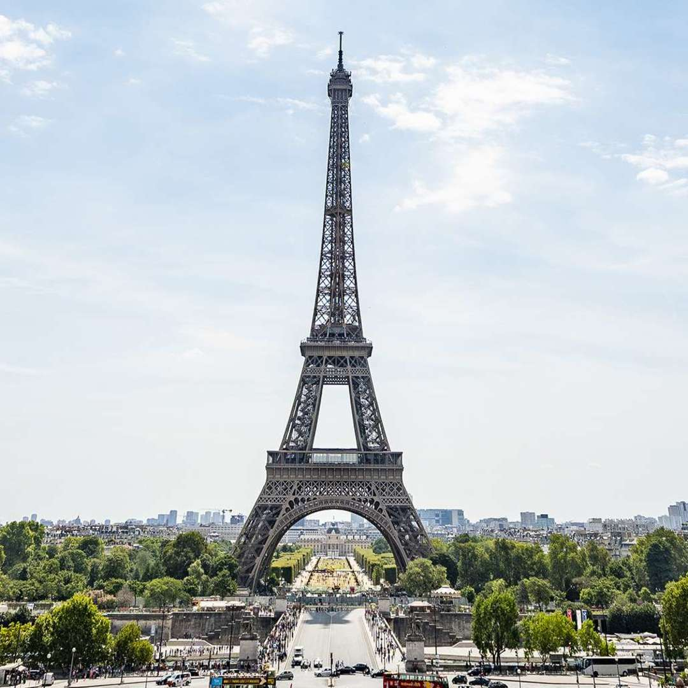
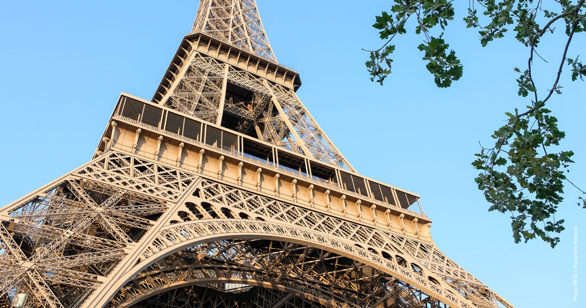

La Tour Eiffel, construite entre 1887 et 1889, est l’œuvre emblématique de Gustave Eiffel, bien qu’elle ait été conçue initialement par ses ingénieurs Maurice Koechlin et Émile Nouguier. Créée pour l'Exposition universelle de 1889, célébrant le centenaire de la Révolution française, elle mesurait 300 mètres de haut, ce qui en a fait la structure la plus élevée au monde jusqu'en 1930. Sa construction, réalisée en seulement 2 ans et 2 mois, a mobilisé 300 ouvriers. Cependant, avant son édification, elle a fait l’objet de vives critiques de la part d’artistes et intellectuels, qui la considéraient comme une "monstruosité de fer". Initialement prévue pour être démantelée après 20 ans, la Tour a été sauvée grâce à son rôle dans les télécommunications. Dès le début du XXe siècle, elle a servi de station de transmission radio et a joué un rôle stratégique pendant la Première Guerre mondiale pour intercepter des communications ennemies. Elle est devenue une attraction touristique majeure, accueillant aujourd'hui plus de 7 millions de visiteurs par an et ayant dépassé les 300 millions de visiteurs depuis son ouverture. Pour préserver cette structure de 10 100 tonnes composée de 18 038 pièces métalliques, des travaux réguliers de peinture et d’entretien sont réalisés. Devenue un symbole universel de Paris et de la France, la Tour Eiffel incarne à la fois l'audace architecturale et l'innovation technologique de son époque.
Touchez la photo pour voir la video
BIENVENUE AU TOUR-EIFFEL
HISTORIQUE
